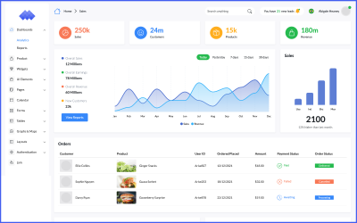
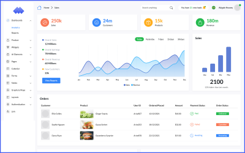

Gestionnaire de Cloud Automatisé

Fonctionnalités clés
- Déploiement automatisé des ressources cloud avec Terraform.
- Sécurisation avancée des ressources grâce à AWS IAM.
- Intégration de tests de sécurité continus pour l’infrastructure.
- Optimisation des coûts via une gestion intelligente des ressources.
Détails techniques
- Outils : Terraform, AWS CLI, AWS IAM.
- Cloud Provider : Amazon Web Services (AWS).
- Pratiques de sécurité : Validation des configurations avec des outils comme Checkov.
- Automatisation : Scripts CI/CD intégrés avec GitHub Actions.
Description
Le projet **Gestionnaire de Cloud Automatisé** est une solution permettant de gérer et déployer des infrastructures cloud de manière automatisée et sécurisée. Basé sur le concept d'Infrastructure as Code, il utilise Terraform pour simplifier les déploiements complexes sur AWS.
Avec un accent particulier sur la sécurité, ce gestionnaire intègre des vérifications automatiques pour réduire les risques et garantir une conformité optimale aux meilleures pratiques DevSecOps.
Points forts
- Automatisation complète des déploiements grâce à Terraform.
- Renforcement de la sécurité avec des audits automatiques et des politiques IAM.
- Réduction des erreurs humaines et amélioration de la vitesse de déploiement.
Galerie
Quelques visuels de la plateforme :
 
